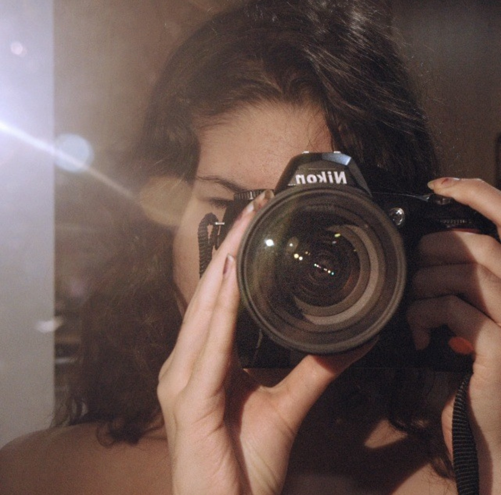

Sobre mí

nacionalidad: española
adicta al café (oficialmente)
dibuja mejor con lluvia de fondo
siempre con una mancha de pintura
Soy Alejandra Marín (1999), una ilustradora española que actualmente vive en Cartagena (Murcia). Trabajo con distintas disciplinas, aunque la ilustración suele ser mi medio principal.
Me gusta trabajar con historias y crear estéticas femeninas y fantásticas. Creo que la estética cambia por completo la forma en la que experimentamos algo, por eso me gusta llevar mi arte un poco más allá, explorando su funcionalidad a través de aplicaciones, juegos, proyectos y universos visuales enteros.
Me considero autodidacta y mi principal motor es seguir explorando y expandiendo mi forma de crear. Me gusta aprender cosas nuevas y experimentar con diferentes medios, porque creo que cuantas más experiencias recoja, más podré ampliar mi forma de ver y crear.
- Procreate
- Photoshop
- Wordpress
- Blender